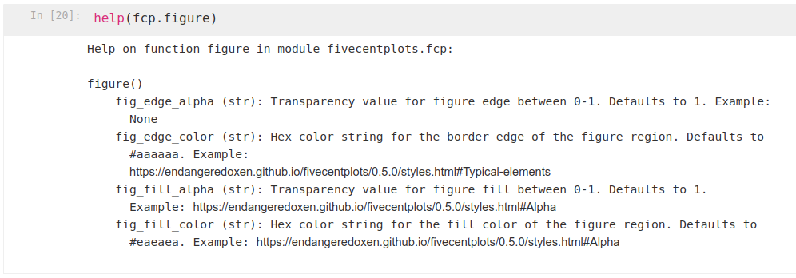

Keyword Arguments¶
Required args¶
In general, all plot types in fivecentplots require input data in the form of a pandas.DataFrame
Arg |
Data Type |
Description |
|---|---|---|
df |
pandas |
DataFrame containing all data to be plotted including grouping columns |
Note
A few plot types that use 2D arrays of data where DataFrame column names are meaningless (like `imshow`) will
also allow the user to directly use a numpy.ndarray. However, the grouping options in fivecentplots
like row or wrap still require DataFrame inputs in order to gather the values from target grouping columns.
Required kwargs¶
With the singular exception of plotting 2D image data, all plot types require at least one column name to specify what data should be plotted. These values are supplied as kwargs, not args, so that order of the arguments doesn’t matter. Even though these values are technically kwargs, the plot will fail if they are not defined.
Keyword |
Data Type |
Description |
Required? |
|---|---|---|---|
x |
str or list of str |
Column name of the x-axis data (horizontal axis) |
all except:
|
y |
str or list of str |
Column name of the y-axis data (vertical axis) |
all except:
|
z |
str |
Column name of the z-axis data |
only for contour and heatmap |
Note
A full description of all required args is provided in the documentation for each plot type or in the API section
Optional kwargs¶
All characteristics of various Element objects in a plot (legend, axes, etc) and parameters related to the
physical layout of these objects within the plot (whitespace, subplot grid layout) defined entirely by
optional keyword arguments. These kwargs can be specified in the plot function call or they can be pulled from a
simple theme file. If the kwarg is not found in either of these locations, a built-in default value
is used.
Because the number of kwargs is vast, we will not outline all of them here. However, we will give some general guidelines and refer the user to the full API for specifics.
Nomenclature¶
Keywords that access the attributes of an Element typically follow a specific formula:
Keyword Naming Scheme
<element name>_<major|minor axis type (if any)>_<x|y|z axis (if any)>_<element attribute name>
Consider some examples:
Set the x label font color to red:
label_x_font_color = ‘#FF0000’
Set the y-axis minor gridline width to 2 pixels:
grid_major_y_width = 2
Set the axes edge color to black:
ax_edge_color = ‘#000000’
Set the whisker color in a box plot:
box_whisker_color = #FF00FF
Display the fit equation and rsq value of a line fit:
fit_eqn = True fit_rsq = True
Set a different marker size just for the legend
legend_marker_size = 8
Note
For convenience, there are a handful of keywords that allow a shorthand notation when
defining them within the function call. For example, if you are calling fcp.boxplot
and want to convert the box to a violin, you can use either box_violin=True
or violin=True. Since it is obvious from the function call that these violins belong
to this plot type, we allow the user to abbreviate. However, the long form of such values
is still required in theme files in case of overlap with other plot types.
Getting Help¶
Help regarding keywords is available by:
fcp.docs(): loads the docs where you can find the API section
help(fcp.some_function_or_element): prints the args and kwargs that applyTo help with finding kwargs,
fcp.pycontains a number of dummy functions for various “elements”. These functions have no actual function in the plotting, but exist solely to provide docstrings. These include:
axes
cbar(color bars)
figure
grouping
gridlines
labels
legend
lines
markers
ticks
tick_labels
ws(whitespace)
{kind=link}
Base attributes¶
Most Element object contains a basic set of attributes which may or may not be used
depending on the specifics of the element:
Category |
Keyword |
Description |
Default |
|---|---|---|---|
Fill |
fill_alpha |
fill color opacity [0 (fully transparent) - 1 (opaque)] |
1 |
fill_color |
fill color (hex color code) |
#ffffff |
|
Edges |
edge_alpha |
edge color opacity [0 (fully transparent) - 1 (opaque)] |
1 |
edge_width |
width in pixels of the element border |
1 |
|
edge_color |
edge color (hex color code) |
#ffffff |
|
Fonts |
font |
font name for element text |
sans-serif |
font_color |
font color (hex color code) |
#000000 |
|
font_size |
font size in pixels |
14 |
|
font_style |
font style [‘normal’, ‘italic’, ‘oblique’] |
normal |
|
font_weight |
font weight [‘light’, ‘normal’, ‘medium’, ‘semibold’, ‘bold’, ‘heavy’, ‘black’] |
normal |
|
Lines |
alpha |
line opacity |
1 |
color |
line color (hex color code) |
#000000 |
|
style |
line style [‘-‘, ‘–’, ‘-.’, ‘:’] |
||
width |
line width in pixels |
1 |
|
Other |
on |
toggle visibility of the element |
depends |
size |
[width, height] of the object |
||
text |
label text associated with the object |